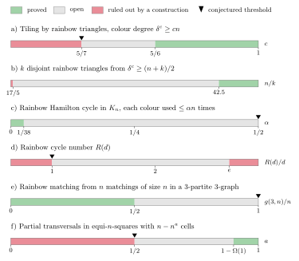

Appendix
The appendix of the PDF, generated from the same data as the interactive pages.
A. Main results by chapter
Matchings and transversals
| Target | Host and colouring | Result | Obstruction | In the text |
|---|---|---|---|---|
| Decompositions | ||||
| decomposition into transversals (orthogonal mate) | some Latin square of order $n$ | exists for every $n\notin\{2,6\}$ (Bose–Shrikhande–Parker); a random Latin square has one with high probability (Bowtell–Montgomery) | $n=2,6$: none (Tarry); even $n$: squares with no transversal | Conj. 2.1, Thm 2.2 |
| $(1-o(1))n$ disjoint partial transversals of size $(1-o(1))n$ | every Latin square of order $n$ | holds (Montgomery–Pokrovskiy–Sudakov) | — | Thm 2.3 |
| decomposition into rainbow perfect matchings (Room square) | some optimal colouring of $K_{2n}$ | exists if and only if $n\geq4$ (Mullin–Wallis) | $n\in\{2,3\}$ | Thm 2.4 |
| perfect $1$-factorisation | $K_{2n}$ | known when $2n-1$ or $n$ is prime; $(1-o(1))2n$ pairwise Hamiltonian classes (Cheng–Sgueglia) | — | Conj. 2.5 |
| One transversal | ||||
| full transversal | Latin square of odd order | open (Ryser); random squares: with high probability (Kwan) | even $n$: the cyclic square has none | Conj. 2.9, Thm 2.16 |
| full transversal | multiplication table of a finite group $G$ | exists iff the Sylow $2$-subgroups are trivial or non-cyclic (Hall–Paige) | nontrivial cyclic Sylow $2$-subgroup | Thm 2.11 |
| partial transversal with $n-1$ cells | every Latin square of order $n$ | for large $n$ (Montgomery); $n-O(\log n/\log\log n)$ for all $n$ (Keevash et al.) | even $n$: $n$ cells impossible | Conj. 2.19, Thm 2.21 |
| More colours and bounded colourings | ||||
| rainbow perfect matching | proper colouring of $K_{n,n}$ with $\geq n^{2-\varepsilon}$ colours | holds for large $n$ (Keevash–Yepremyan; Montgomery–Pokrovskiy–Sudakov) | $n$ colours: cyclic square of even order | Conj. 2.24 |
| full transversal | $n\times n$ array, each symbol at most $(n-1)/16$ times | holds (Erdős–Spencer); bound $(1-o(1))n$ open | each symbol $n$ times: see next row | Thm 2.27, Prob. 2.30 |
| partial transversal with $n-1$ cells | equi-$n$-square (each symbol exactly $n$ times) | $n-n^{1-\Omega(1)}$ cells (Chakraborti et al.) | some squares have none with more than $n-\Omega(\sqrt n)$ cells | Conj. 2.26, Thm 2.29 |
| Families of matchings | ||||
| rainbow matching of size $n$ | $2n-1$ matchings of size $n$, bipartite graph | holds (Drisko) | $2n-2$ matchings from a $2n$-cycle | Thm 2.35 |
| full rainbow matching | $n$ matchings of size $n+1$, bipartite multigraph | size $n+o(n)$ suffices (Pokrovskiy) | size $n$: $n-1$ copies of $M_1$ and one of $M_2$ in a $2n$-cycle | Conj. 2.33 |
| full rainbow matching | $n$ matchings of size $n+2$, multigraph | size $n+20n^{1-1/16}$ suffices (Correia–Pokrovskiy–Sudakov) | size $n+1$ is not enough | Conj. 2.37 |
| Steiner triple systems | ||||
| matching with $\lfloor n/3\rfloor-1$ edges | Steiner triple system of order $n$ | for large $n$ (Montgomery) | — | Conj. 2.41 |
Spanning trees and bases
| Target | Host and colouring | Result | Obstruction | In the text |
|---|---|---|---|---|
| Decomposing into rainbow spanning trees | ||||
| $n$ rainbow spanning trees partitioning the edges | optimal colouring of $K_{2n}$ | for large $n$, even with isomorphic trees (Glock–Kühn–Montgomery–Osthus) | — | Conj. 3.3, Thm 3.7 |
| $\lfloor n/2\rfloor$ edge-disjoint rainbow spanning trees | proper colouring of $K_n$ | $(1-o(1))n/2$ trees (Montgomery–Pokrovskiy–Sudakov) | — | Conj. 3.5, Thm 3.6 |
| $(1-\varepsilon)m$ disjoint rainbow forests with $k$ edges | proper colouring, $km$ edges, colour classes of size $\leq m$ | holds for $1\leq k\leq2m$ (Xu) | $k>2m$: possibly no rainbow forest with $k$ edges | Thm 3.8 |
| Rainbow copies of a given tree | ||||
| every tree on $(1-o(1))n/k$ vertices | locally $k$-bounded colouring of $K_n$ | holds (Montgomery–Pokrovskiy–Sudakov) | proper colourings: no rainbow Hamilton path when $n=2^k$ | Thm 3.9, Conj. 3.10 |
| every tree with at most $n$ edges | proper colouring of the hypercube $Q_n$ | holds (Crawford–Sankar–Schildkraut–Spiro) | colouring by coordinates: $n$ colours, no rainbow cycle | §3.4 |
| Labellings and Ringel's conjecture | ||||
| decomposition of $K_{2n+1}$ into copies of a tree with $n$ edges | near-distance colouring of $K_{2n+1}$ (rainbow copy suffices) | for large $n$ (Montgomery–Pokrovskiy–Sudakov; Keevash–Staden) | — | Conj. 3.13, Thm 3.14 |
| graceful labelling of every tree | difference colouring of $K_{n+1}$ on $\{0,\dots,n\}$ | open; approximate versions known | — | Conj. 3.12 |
| every tree on $n$ vertices, maximum degree $\leq\Delta$ | $K_{\mathbb{Z}_n}$, edge $ab$ coloured $a+b$ | for large $n$ (Müyesser–Pokrovskiy) | the same colouring on $\mathbb{Z}_2^k$: no rainbow Hamilton path | Thm 3.15 |
| Matroid bases | ||||
| $n$ disjoint rainbow bases (Rota) | $n$ bases of a rank-$n$ vector space or matroid | $(1-o(1))n$ disjoint; $(1+o(1))n$ cover all elements (Montgomery–Sauermann) | — | Conj. 3.16, Thm 3.18 |
| common independent set of size $n-1$, one element per $F_i$ | two matroids, $n$ disjoint common independent sets of size $n$ | open | Latin squares without transversals: $n$ is impossible | Conj. 3.20 |
| Collections and random colourings | ||||
| every tree with maximum degree $\leq cn/\log n$ | $n-1$ graphs, each with minimum degree $\geq(1/2+\alpha)n$ | transversal copy exists (Montgomery–Müyesser–Pehova) | — | Thm 3.21 |
| rainbow spanning tree | random graph process, $\geq n-1$ random colours | appears when the graph is connected and has $n-1$ colours (Frieze–McKay) | — | Thm 3.22 |
Paths and cycles
| Target | Host and colouring | Result | Obstruction | In the text |
|---|---|---|---|---|
| Long paths and cycles in proper colourings | ||||
| path on $n-1$ vertices | proper colouring of $K_n$ | holds for large $n$ (BMMP) | $n=2^k$: no rainbow Hamilton path (Maamoun–Meyniel) | Thm 4.2, Fig. 14 |
| cycle through all but $C$ vertices | proper colouring of $K_n$ | some constant $C$ (BMMP); value of $C$ unknown | $1$-factorisations have $n-1$ colours: no rainbow Hamilton cycle | Prob. 4.3 |
| path with $(1-o(1))d$ edges | proper colouring of a $d$-regular graph | holds (Bucić et al.) | — | Thm 4.4 |
| Hamilton cycle | $K_n$, each colour used at most $\alpha n$ times | $\alpha=1/38$ suffices | classes of size $<n/2$: every rainbow path misses $(\ln n)/42$ vertices (Pokrovskiy–Sudakov) | §4.1 |
| Orderings of groups | ||||
| ordering of $S$ with distinct partial sums | $S\subseteq\mathbb{Z}_p\setminus\{0\}$, $p$ prime | holds for large $p$ (Pham–Sauermann) | — | Conj. 4.6, Thm 4.7 |
| ordering of $S$ with distinct partial sums | $S\subseteq G\setminus\{0\}$, $G$ finite abelian | holds for $|S|\geq n_0$ (Kuang–Wang) | — | Thm 4.8 |
| directed path with $d-o(d)$ edges | $d$-regular digraph, one in- and one out-edge of each of $d$ colours at every vertex | holds (Wilson); $d-1$ edges open | — | Prob. 4.9, Thm 4.10 |
| Short cycles | ||||
| cycle of length $\leq\lceil n/r\rceil$ | $n$ vertices, $n$ colours, each used $\geq r$ times | $r\leq2$; length $\leq n/r+\alpha_r$ for fixed $r$ (Hompe–Huynh) | — | Conj. 4.13 |
| some rainbow cycle | proper colouring, average degree $d$ | $d\geq C\log n\log\log n$ suffices (Alon et al.) | hypercube: $d=\log_2 n$, no rainbow cycle | Conj. 4.16 |
| Dense hosts | ||||
| triangle | colour degree $\geq(n+1)/2$ | holds (Li; Li, Ning, Xu and Zhang) | proper colouring of $K_{n/2,n/2}$ | §4.5 |
| Hamilton cycle | $\delta(G)\geq n/2$, each colour used $\leq\mu n$ times | some $\mu>0$ (Coulson–Perarnau) | fails for $\mu>1/8$; for proper colourings $1/8$ conjectured exact | Thm 4.17, Conj. 4.18 |
General spanning structures
| Target | Host and colouring | Result | Obstruction | In the text |
|---|---|---|---|---|
| Proper and locally bounded colourings | ||||
| tiling by rainbow copies of $F$ | proper colouring, $\delta(G)\geq(1-1/\chi(F))n+C$ | holds (Yuster) | rainbow $F$-factor impossible: a $1$-factorisation has $n-1$ colours | Thm 5.1 |
| rainbow triangles covering all but $C$ vertices | proper colouring of $K_n$ with $n$ colours | all but $n^{1-\varepsilon}$ vertices (Rödl nibble) | no example rules out $C=2$ | Conj. 5.2 |
| copy of $H$, $\Delta(H)\leq\Delta$, spanning | quasirandom host, locally $\Lambda$-bounded and globally $(1-\gamma)e(G)/e(H)$-bounded | holds (Ehard–Glock–Joos) | global bound $e(G)/e(H)$ is forced by counting colours | Thm 5.3 |
| cyclic decomposition of $K_{2n+1}$ into copies of $H$ | $H$ with $n$ edges and $\Delta(H)\leq\Delta$ | cyclic packing with $(1-\varepsilon)n$ edges; trees: for large $n$ | — | Conj. 5.4 |
| Globally bounded colourings | ||||
| copy of any $H$ with $\Delta(H)\leq\Delta$ | $K_n$, each colour at most $n/(51\Delta^2)$ times | holds (Böttcher–Kohayakawa–Procacci) | classes of size $16n/\Delta^2$ can fail (Sudakov–Volec) | Thm 5.5 |
| $H$ with at most $r$ cherries | $K_n$, each colour at most $n/(1512\,r^{3/4})$ times | holds (Sudakov–Volec) | $9$-bounded colourings and trees with $\Theta(n^{4/3})$ cherries | Thm 5.6 |
| $F$-factor | $\delta(G)\geq(\delta_F+\varepsilon)n$, each colour at most $\mu n$ times | holds; same threshold as uncoloured (Coulson–Keevash–Perarnau–Yepremyan) | — | Thm 5.7 |
| $r$-colourable $H$ of bounded degree and bandwidth $\leq\beta n$ | $\delta(G)\geq(1-1/r+\varepsilon)n$, each colour at most $\mu n$ times | holds (Glock–Joos) | — | Thm 5.8 |
| Graph collections | ||||
| transversal Hamilton cycle | $n$ graphs of minimum degree $\geq n/2$ | holds; colour-blind (Joos–Kim) | — | §5.5 |
| transversal $F$-factor | minimum degree $\geq(\delta_F^{\mathrm T}+\varepsilon)rn$ in each graph | holds (Montgomery–Müyesser–Pehova) | bridgeless $F$: threshold rises to $1/2$ (one bipartite layer) | Thm 5.9, Fig. 23 |
| transversal $r$-th power of a Hamilton cycle | minimum degree $\geq(r/(r+1)+\varepsilon)n$ in each graph | holds (Gupta et al.); exact threshold open | — | Thm 5.10 |
| Colour degree, decompositions and random colourings | ||||
| tiling by rainbow triangles | colour degree $\geq cn$ | $c=5/6+\varepsilon$ suffices (Lo–Williams); $5/7$ conjectured | colour degree $5n/7-1$ can fail (Lo–Williams) | Thm 5.11, Conj. 5.12 |
| $\alpha$-decomposition into rainbow $F$-factors | $K_n$, globally $(1-\alpha)v(F)n/(2e(F))$- and locally $\eta n/\log^{2a(F)}n$-bounded | holds (Kim–Kühn–Kupavskii–Osthus) | global bound is forced by counting | Thm 5.13 |
| rainbow copy of a minimal member of $\mathcal F$ | random subset of $X$, uniformly coloured with $k\geq\ell$ colours | threshold $\leq Kq_f(\mathcal F)\log\ell$ (Han–Yuan) | — | Thm 5.14 |
Edge-coloured digraphs
| Target | Host and colouring | Result | Obstruction | In the text |
|---|---|---|---|---|
| Complete digraphs | ||||
| path on $n-1$ vertices | complete digraph with loops, proper colouring with $n$ colours (a Latin square) | for large $n$ (Bowtell–Montgomery–Müyesser–Pokrovskiy) | cyclic squares of even order: no rainbow Hamilton cycle | Thm 6.1 |
| path or cycle with $n-1$ edges | complete digraph with loops, any proper colouring | open | doubled Maamoun–Meyniel colouring: no rainbow Hamilton path | Conj. 6.3 |
| cycle of length $n-O(1)$ | complete digraph, any proper colouring | length $n-O(n^{4/5})$ (Benzing–Pokrovskiy–Sudakov) | — | Thm 6.2 |
| Colour degree and outdegree | ||||
| rainbow cycle of even length $\ell\geq4$ | colour degree $\geq(n+5)/3$ | holds (Czygrinow–Molla–Nagle–Oursler) | $3\nmid\ell$: a coloured complete $3$-partite graph | Thm 6.4 |
| directed cycle of length $\ell\geq4$ | oriented graph, outdegree $\geq(n+1)/3$ | holds (Czygrinow–Molla–Nagle–Oursler) | $3\nmid\ell$: blow-up of a directed triangle | Thm 6.4 |
| Fair division and arborescences | ||||
| rainbow cycle number $R(d)$ | multipartite digraphs, parts of size $\leq d$ | $d\leq R(d)<ed$ (Sivashankar) | $R(d)\geq d$ | Thm 6.5, Prob. 6.6 |
| rainbow spanning arborescence | $n-1$ colour classes, each a spanning arborescence | special cases (e.g. underlying cycle) and $n\leq8$; holds with $2n-4$ classes | — | Conj. 6.7 |
| Collections and random digraphs | ||||
| transversal Hamilton path / cycle | $n-1$ tournaments / $n$ tournaments, all but one strongly connected | for large $n$ (Chakraborti–Kim–Lee–Seo) | $n=3$: two opposite directed triangles | Thm 6.8, Fig. 29 |
| transversal Hamilton cycle | $n$ digraphs, minimum semidegree $\geq n/2$ | for large $n$ (Cheng–Li–Sun–Wang) | — | Thm 6.9, Prob. 6.11 |
| every orientation of every cycle, simultaneously | $\delta^0(D_0)\geq\alpha n$ plus $D(n,C/n)$, coloured uniformly from $[n]$ | with high probability (Krueger–Staudinger) | — | Thm 6.12 |
Hypergraphs, designs and set families
| Target | Host and colouring | Result | Obstruction | In the text |
|---|---|---|---|---|
| Families of matchings | ||||
| rainbow matching of size $t$ | $N$ matchings of size $t$ in an $r$-graph, $r\geq3$ fixed | $N$ of order $t^r$ is necessary and sufficient (Pohoata–Sauermann–Zakharov) | zero-sum-free sequences beat $2^{r-1}(t-1)$ (Alon) | Thm 7.1, Fig. 31 |
| rainbow matching of size $g(r,n)$ | $n$ matchings of size $n$, $r$-partite $r$-graph, $r\geq3$ | $g(r,n)\geq 2n/(r+1)-O_r(1)$; conjectured $n-o(n)$ | $g(r,n)\leq n-\Omega_r(n^{1-1/r})$ (Bowtell–Freschi–Kronenberg–Yan) | Thm 7.2, Conj. 7.3 |
| full rainbow matching | $r$-graph of maximum degree $\Delta$, each colour class $\geq r\Delta$ edges | holds (Aharoni–Berger–Meshulam) | $r\Delta-1$ is not enough (Wdowinski) | §7.2 |
| Set families and fair division | ||||
| pairwise disjoint $F_i\in\mathcal F_i$ (rainbow Erdős matching) | $m$ families of $k$-subsets of $[n]$, each larger than $f(n,m,k)$ | $n\geq2km$ and $n$ large; all large $n$ for $k=3$ | the two Erdős constructions | Conj. 7.4 |
| MMS allocation (rainbow matching using every colour) | $n$ agents with monotone valuations, at most $\mu(n)$ goods | $\mu(n)=n+\Theta(\log n)$ (Feige) | $4$ items, $2$ agents (rows versus columns) | Thm 7.5, Fig. 33 |
| Collections and bounded colourings | ||||
| rainbow perfect matching | $n/k$ $k$-graphs with $\delta_\ell>\delta(n,k,\ell)$, $k/2\leq\ell<k$ | holds for large $n$; colour-blind (You) | the uncoloured extremal $k$-graphs | Thm 7.6 |
| rainbow tight Hamilton cycle | $n$ $k$-graphs with $\delta_{k-2}\geq(5/9+\gamma)\binom n2$ | holds (Tang–Wang–Wang–Yan); other degree types conjectured | — | Conj. 7.7 |
| rainbow $F$-factor | $\delta_\ell(G)\geq(\delta^*_\ell(F)+\varepsilon)n^{k-\ell}$, $\mu$-bounded colouring | holds (Coulson–Keevash–Perarnau–Yepremyan) | a local bound is needed for $F=K^{(k)}_{k+1}$ | Thm 7.8 |
| rainbow loose Hamilton cycle | above the loose-cycle degree threshold, each colour $\leq\mu n^{k-1}$ times | holds (Kathapurkar–Morris–Perarnau) | tight cycles: linear colour classes can fail | Thm 7.9, Fig. 34 |
| Latin hypercubes | ||||
| transversal | Latin hypercube of dimension $d$, order $n$, $n$ or $d$ odd | open; known for $n\leq5$ | $n$ and $d$ both even: the cyclic hypercube has none | Conj. 7.10 |
B. History of the major conjectures
An interactive version is on the timeline page.
| Conjecture | Statement | Milestones | Status | In the text |
|---|---|---|---|---|
| Euler's officers (1782) | no Latin square of order $n\equiv2\bmod4$ decomposes into transversals | 1900: true for $n=6$ (Tarry); 1959--60: false for every other such $n>2$ (Bose, Shrikhande, Parker); 2025: random Latin squares decompose (Bowtell–Montgomery) | disproved | Conj. 2.1 |
| Hall–Paige (1955) | a group table has a transversal iff the Sylow $2$-subgroups are trivial or non-cyclic | 1947: abelian groups (Paige); 2009--2018: reduction and proof (Wilcox; Evans; Bray et al.) | proved | Thm 2.11 |
| Ryser (1967) | every Latin square of odd order has a transversal | 2016: random Latin squares (Kwan); 2022: their number of transversals (Eberhard–Manners–Mrazović) | open | Conj. 2.9 |
| Ryser–Brualdi–Stein (1967--1991) | every Latin square has a partial transversal with $n-1$ cells | 1969: $2n/3$; 1977: $3n/4$; 1978: $n-\sqrt n$; 1982/2008: $n-O(\log^2n)$ (Shor; Hatami–Shor); 2020: $n-O(\log n/\log\log n)$ (Keevash et al.); 2023: $n-1$ (Montgomery) | proved for large $n$ | Conj. 2.19, Thm 2.21 |
| Stein (1975) | every equi-$n$-square has a partial transversal with $n-1$ cells | 1991: full transversal if each symbol appears $\leq(n-1)/16$ times (Erdős–Spencer); 2017: counterexamples missing $(\ln n)/42$ cells (Pokrovskiy–Sudakov); 2024: $n-n^{1-\Omega(1)}$ cells, and $n-\Omega(\sqrt n)$ is best possible (Chakraborti et al.) | disproved | Conj. 2.26 |
| Kotzig (1963) | $K_{2n}$ has a perfect $1$-factorisation | true when $2n-1$ or $n$ is prime; 2026: $(1-o(1))2n$ pairwise Hamiltonian classes (Cheng–Sgueglia) | open | Conj. 2.5 |
| Aharoni–Berger (bipartite) (2009) | $n$ matchings of size $n+1$ in a bipartite multigraph have a full rainbow matching | size $2n$ by a greedy argument; then $7n/4$, $5n/3$, $3n/2+1$; 2016: $n+o(n)$ (Pokrovskiy); 2021: $n+O(n^{3/4})$ (Correia–Pokrovskiy–Sudakov) | open | Conj. 2.33 |
| Aharoni–Berger ($r$-partite) (2009) | $2^{r-1}(t-1)+1$ matchings of size $t$ in an $r$-partite $r$-graph have a rainbow matching of size $t$ | 2011: disproved via zero-sum sequences (Alon); 2022: the right number has order $t^r$ (Pohoata–Sauermann–Zakharov) | disproved | Thm 7.1 |
| Ringel (1963) | $K_{2n+1}$ decomposes into copies of any tree with $n$ edges | 1967: graceful labellings (Rosa); 2020: proof for large $n$ (Montgomery–Pokrovskiy–Sudakov; Keevash–Staden) | proved for large $n$ | Conj. 3.13, Thm 3.14 |
| Graceful tree (1960s) | every tree is graceful | 2016: almost all trees almost graceful (Adamaszek et al.); 2025: bijective labelling with few repeated differences (Letzter–Pokrovskiy–Williams) | open | Conj. 3.12 |
| Brualdi–Hollingsworth (1996) | every optimal colouring of $K_{2n}$ decomposes into rainbow spanning trees | constant numbers of trees; 2017: linearly many (Balogh–Liu–Montgomery; Pokrovskiy–Sudakov); 2018: $(1-o(1))n$ (Montgomery–Pokrovskiy–Sudakov); 2019: exact, isomorphic trees (Glock–Kühn–Montgomery–Osthus) | proved for large $n$ | Conj. 3.3, Thm 3.7 |
| Rota's basis conjecture (1989) | $n$ bases of a rank-$n$ space split into $n$ rainbow bases | 1994: the Alon–Tarsi conjecture for $n$ implies it (Huang–Rota), so it holds in characteristic $0$ for $n=p\pm1$; 2025: $(1-o(1))n$ disjoint rainbow bases (Montgomery–Sauermann) | asymptotic form proved | Conj. 3.16, Thm 3.18 |
| Hahn / Andersen (1980 / 1989) | proper colourings of $K_n$ have a rainbow Hamilton path (Hahn), or a path on $n-1$ vertices (Andersen) | 1984: Hahn's form fails for $n=2^k$ (Maamoun–Meyniel); 2016: $n-O(n^{3/4})$ (Alon–Pokrovskiy–Sudakov); 2017: $n-O(\sqrt n\log n)$ (Balogh–Molla); 2026: $n-1$ vertices (Bowtell–Montgomery–Müyesser–Pokrovskiy) | proved for large $n$ | Conj. 4.1, Thm 4.2 |
| Hahn–Thomassen (1986) | colour classes of size $\alpha n$ force a rainbow Hamilton cycle in $K_n$ | $O(n^{1/3})$ (Hahn–Thomassen); $n/64$ (Albert–Frieze–Reed); 2012: $n/38$ (Böttcher–Kohayakawa–Procacci); classes just below $n/2$ can fail (Pokrovskiy–Sudakov) | proved | §4.1 |
| Frieze–Krivelevich (2008) | colour classes of size $\alpha n$ force every bounded-degree spanning tree | 2012: every graph of maximum degree $\Delta$ with classes $n/(51\Delta^2)$ (Böttcher–Kohayakawa–Procacci); 2015: the order $n/\Delta^2$ is optimal (Sudakov–Volec) | proved | Thm 5.5 |
| Graham (1971) | every $S\subseteq\mathbb{Z}_p\setminus\{0\}$ has an ordering with distinct partial sums | small sets by the polynomial method and rectification; 2024: Bedert–Kravitz; 2026: large $p$ (Pham–Sauermann) | proved for large $p$ | Conj. 4.6, Thm 4.7 |
| Caccetta–Häggkvist / Aharoni (1978 / 2017) | outdegree $r$ (resp. colour classes of size $r$) forces a (rainbow) cycle of length $\leq\lceil n/r\rceil$ | Aharoni's form implies Caccetta–Häggkvist; 2018: Aharoni's case $r=2$ (DeVos et al.); 2022: length $\leq n/r+\alpha_r$ (Hompe–Huynh) | open | Conj. 4.12, Conj. 4.13 |
| Keevash–Mubayi–Sudakov–Verstraëte (2007) | $Cn\log n$ edges in a proper colouring force a rainbow cycle | 2023: average degree $(\log n)^{1+o(1)}$ (Alon–Bucić–Sauermann–Zakharov–Zamir); applications to locally decodable codes | open | Conj. 4.16 |
| Brouwer (1981) | every Steiner triple system of order $n$ has a matching with $(n-4)/3$ edges | 2023: $\lfloor n/3\rfloor-1$ edges for large $n$ (Montgomery) | proved for large $n$ | Conj. 2.41 |
| Rainbow arborescence (2024) | $n-1$ spanning arborescences have a rainbow spanning arborescence | 2025: underlying cycles (Bérczi–Király–Yamaguchi–Yokoi) | open | Conj. 6.7 |
C. Index of conjectures and problems
An interactive version is on the open problems page.
| Statement | Status | |
|---|---|---|
| 2.1 | no Latin square of order $n\equiv2\bmod4$ decomposes into transversals | disproved |
| 2.5 | $K_{2n}$ has a perfect $1$-factorisation | open |
| 2.8 | $K_{n,n}$ has a perfect $1$-factorisation iff $n=2$ or $n$ is odd | open |
| 2.9 | every Latin square of odd order has a transversal | open |
| 2.13 | $k\times k$ subsquares of odd abelian group tables have transversals | proved |
| 2.14 | orthomorphisms with all cycles of length $k$, for $k\mid n-1$ | proved for large groups |
| 2.19 | partial transversal with $n-1$ cells; full one for odd $n$ | $n-1$ part proved for large $n$; odd part open |
| 2.22 | matching with prescribed numbers $a_i$ of edges from each $M_i$ | open; known for $3$ matchings |
| 2.24 | proper colourings of $K_{n,n}$ with $n^2/2$ colours have rainbow perfect matchings | proved |
| 2.26 | equi-$n$-squares have partial transversals with $n-1$ cells | disproved |
| 2.30 | colour classes of size $(1-o(1))n$ force a rainbow perfect matching of $K_{n,n}$? | open |
| 2.31 | equi-$n$-squares have partial transversals with $n-C\sqrt n$ cells | open |
| 2.32 | colourings of $K_{n,n-1}$ proper on the larger side have rainbow matchings of size $n-1$ | open |
| 2.33 | $n$ matchings of size $n+1$ in a bipartite multigraph give a full rainbow matching | open |
| 2.36 | $2n$ matchings of size $n$ in a graph give a rainbow matching of size $n$ | open; $3n-3$ known |
| 2.37 | $n$ matchings of size $n+2$ in a multigraph give a full rainbow matching | open |
| 2.41 | Steiner triple systems have matchings with $(n-4)/3$ edges | proved for large $n$ |
| 2.43 | almost every Steiner triple system is resolvable | open |
| 3.3 | optimal colourings of $K_{2n}$ decompose into rainbow spanning trees | proved for large $n$ |
| 3.4 | the same with isomorphic trees | proved for large $n$ |
| 3.5 | proper colourings of $K_n$ have $\lfloor n/2\rfloor$ disjoint rainbow spanning trees | open; $(1-o(1))n/2$ known |
| 3.10 | proper colourings of $K_n$ contain every tree on $n-C$ vertices | open; $n-o(n)$ known |
| 3.12 | every tree is graceful | open |
| 3.13 | $K_{2n+1}$ decomposes into copies of any tree with $n$ edges | proved for large $n$ |
| 3.16 | $n$ bases of an $n$-dimensional space split into $n$ rainbow bases | open; asymptotic form proved |
| 3.17 | even and odd Latin squares of even order $n$ differ in number | open; known for $n=p\pm1$ |
| 3.19 | an $n\times n$ array of bases has a choice that is a basis in every row and column | open |
| 3.20 | $n$ common independent $n$-sets of two matroids have a rainbow one of size $n-1$ | open |
| 4.1 | proper colourings of $K_n$ have rainbow paths on $n-1$ vertices | proved for large $n$ |
| 4.3 | do $1$-factorisations of $K_n$ have rainbow cycles through all but two vertices? | open; all but $C$ known |
| 4.5 | colour degree $d$ forces a rainbow path with $d-1$ edges | open; $2d/3+1$ known |
| 4.6 | subsets of $\mathbb{Z}_p\setminus\{0\}$ have orderings with distinct partial sums | proved for large $p$ |
| 4.9 | properly $d$-coloured $d$-regular digraphs have rainbow paths with $d-1$ edges? | open; $d-o(d)$ known |
| 4.11 | do subsets of all finite groups have orderings with distinct partial products? | open |
| 4.12 | outdegree $r$ forces a directed cycle of length $\leq\lceil n/r\rceil$ | open |
| 4.13 | $n$ colour classes of size $r$ force a rainbow cycle of length $\leq\lceil n/r\rceil$ | open; $r\leq2$ known |
| 4.16 | $Cn\log n$ edges in a proper colouring force a rainbow cycle | open; $n(\log n)^{1+o(1)}$ known |
| 4.18 | proper colourings with $\delta\geq n/2$ and classes $\leq n/8$ have rainbow Hamilton cycles | open |
| 5.2 | proper $n$-colourings of $K_n$ have rainbow triangle packings missing $C$ vertices | open |
| 5.4 | cyclic decompositions of $K_{2n+1}$ into any bounded-degree $H$ with $n$ edges | open; known for trees |
| 5.12 | colour degree $(1-(r-1)/(r^2-2))n$ forces a tiling by rainbow $K_r$ | open |
| 6.3 | proper colourings of the complete digraph with loops have rainbow paths or cycles with $n-1$ edges | open |
| 6.6 | is $R(d)=d$? | open; known for $d\leq4$ |
| 6.7 | $n-1$ spanning arborescences have a rainbow spanning arborescence | open |
| 6.10 | strongly rainbow-connected tournament collections have transversal Hamilton cycles | open |
| 6.11 | oriented collections with semidegree $\lceil(3n-4)/8\rceil$: transversal Hamilton cycle? | open |
| 7.3 | $g,g',h,h'$ are all $(1+o(1))n$ | open |
| 7.4 | rainbow version of the Erdős matching conjecture | open; proved for $n\geq2km$, $n$ large |
| 7.7 | tight Hamilton cycles are colour-blind for every degree type | open; $d=k-2$ known |
| 7.10 | Latin hypercubes with $n$ or $d$ odd have transversals | open; known for $n\leq5$ |
D. Threshold gaps
An interactive version is on the thresholds page.
